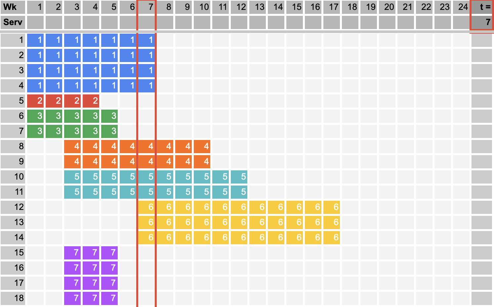
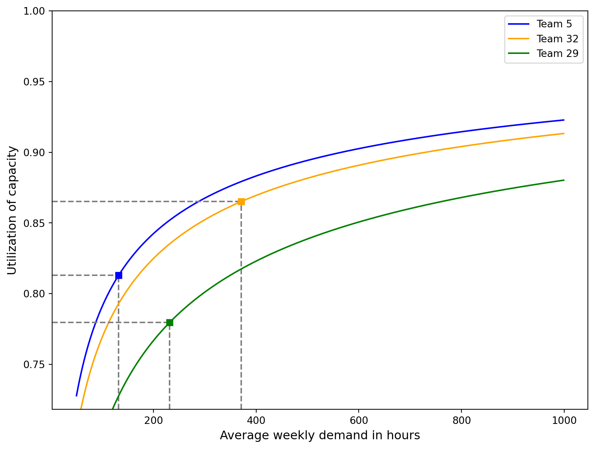
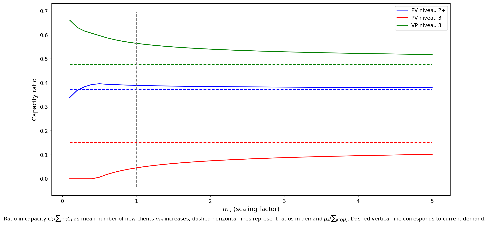
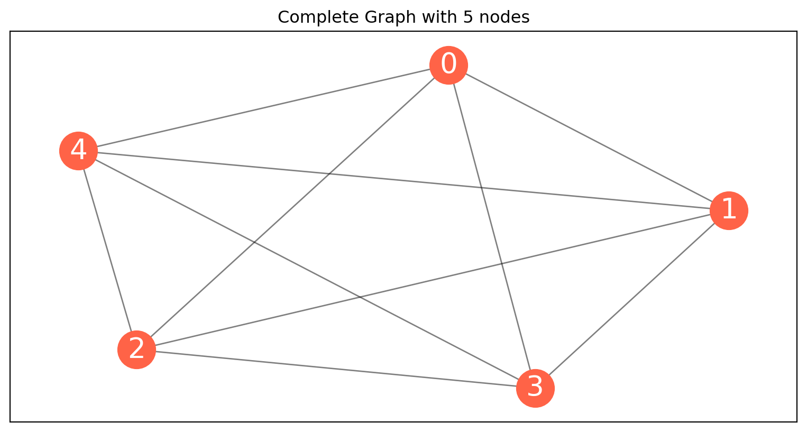
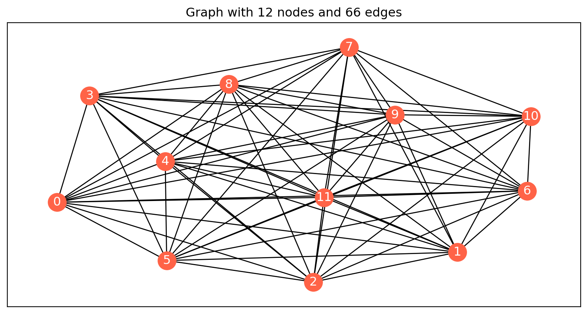
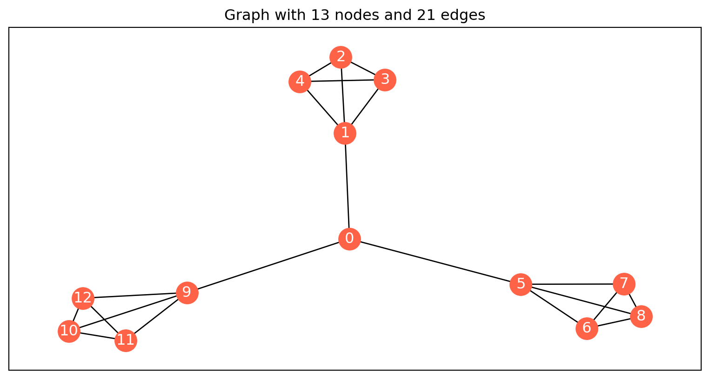

Team size and composition in home health care
René Bekker, Yoram Clapper, Witek ten Hove and Dennis Moeke
Social issue
Decision problem

From: Grieco, Utley, and Crowe (2021)
Business problem
- What are demand dynamics?
- What are appropriate team sizes?
Principles
1 - Care demand
2 - Travel time
3 - Effective capacity
4 - Team composition
5 - Contract type
6 - Communication and management
Data understanding
Data understanding
| Area type | Teams | Planned care (hrs/wk) | Clients | Clients/km2 |
|---|---|---|---|---|
| Urban | 26 | 238 (51) | 221 (51.4) | 71 (31.4) |
| Suburban | 18 | 224 (54) | 238 (61.3) | 11 (5.4) |
| Rural | 11 | 213 (46) | 176 (53.6) | 3 (1.1) |
Data understanding
Data preparation
Data preparation
Modeling
Principle 1: Care Demand
Principle 1: Care Demand
Demand per week \(N\) is generated by:
- Arrival rates \(a\): number of new cases per week
- Length of stays \(s\): number of weeks per case
- Amount of care \(g\): hours per case per week

Principle 1: Care Demand
For some grade of service \(\gamma\), the required weekly capacity \(C\) is \[C = \rho + \gamma z \rho\]
where \(\rho\) \(= m_am_sm_g\) is the average demand, and \(z\) is the peakedness given by \[z = \frac{\sigma_g^2}{m_g} + m_g + m_g(1−G_s)(\frac{\sigma_a^2}{m_a}-1)\] Hence, the utilization of the capacity \(C\) is \[\frac{\mathbb{E}[N]}{C} = \frac{1}{1 + \frac{\gamma\sqrt{z}}{\sqrt{\rho}}}\]
Principle 1: Care Demand
The buffer capacity required to handle demand variability decreases with scale, but the possible reduction becomes smaller as the scale increases.
NB: The available data is limited to planned care and may not accurately reflect the actual demand for home care.

Principle 3: Effective capacity
Principle 3: Effective capacity
Principle 3: Effective capacity
Let \(M\) be the total number of scheduled care workers during some period \(T\), and let \(p\) be the probability that the care worker is present.
The number of care workers present \(\tilde{M}\) then follows a Binomial(\(M\), \(p\)) distribution. Consequently, the properties of the effective capacity
\(P\) \(= \frac{\tilde{M}}{M}\)
follow directly from this observation.
Principle 3: Effective capacity
For \(k\in [0,1]\), the probability that the effective capacity \(P\) is at most \(k\) equals
\[\mathbb{P}(P \le k) = \mathbb{P}(\tilde M \le k M) = \frac{B(kM+1,(1-k)M,p)}{B(kM+1,(1-k)M)}\] with \(B(x,y,p) = \int_p^1 t^{x-1} (1-t)^{y-1} {\rm d}t\) the incomplete Beta function and \(B(x,y) = B(x,y,0)\).
Principle 3: Effective capacity
Small teams are more prone to lower levels of effective capacity than large teams as a result of variability in leave of absence and sick leave, whereas the differences between larger teams become smaller.
Principle 4: Team composition
Principle 4: Team composition
| Level | Qualification | Type of tasks | % of planned care |
|---|---|---|---|
| 1 | PV niveau 2+ | Personal Care | 67% |
| 2 | PV niveau 3 | Personal Care | 9% |
| 3 | VP niveau 3 | Nursing | 24% |
Principle 4: Team composition
Principle 4: Team composition

Principle 4: Team composition
Small teams must deploy above-average amounts of high-level care workers to sufficiently cope with the variability in demand. As the scale increases, the amount of capacity required will move closer to the average workload for each qualification level.
Principle 6: Communication and management
Principle 6: Communication and management
Let \(M\) be the number of members of a team. Then there are \[\frac{M(M-1)}{2}\] potential interactions between team members. In terms of complexity the number of interactions between a team of size \(M\) equals \(O(M^2)\)

Principle 6: Communication and management


Principle 6: Communication and management
The complexity of the number of interactions for a team of size \(M\) is \(O(M^2)\). By splitting the team into \(k\) sub-teams, managed by one mediator, the number of interactions can be reduced by a factor \(k\) as \(M\) grows large.
Practice based scenarios
Questions
References
Grieco, Luca, Martin Utley, and Sonya Crowe. 2021. “Operational Research Applied to Decisions in Home Health Care: A Systematic Literature Review.” Journal of the Operational Research Society 72 (9): 1960–91.
Ministerie van Volksgezondheid, Welzijn en Sport. 2020. “Home - Prognosemodel Zorg En Welzijn.” Webpagina. https://www.prognosemodelzw.nl/.
Social issue
Ministerie van Volksgezondheid (2020)